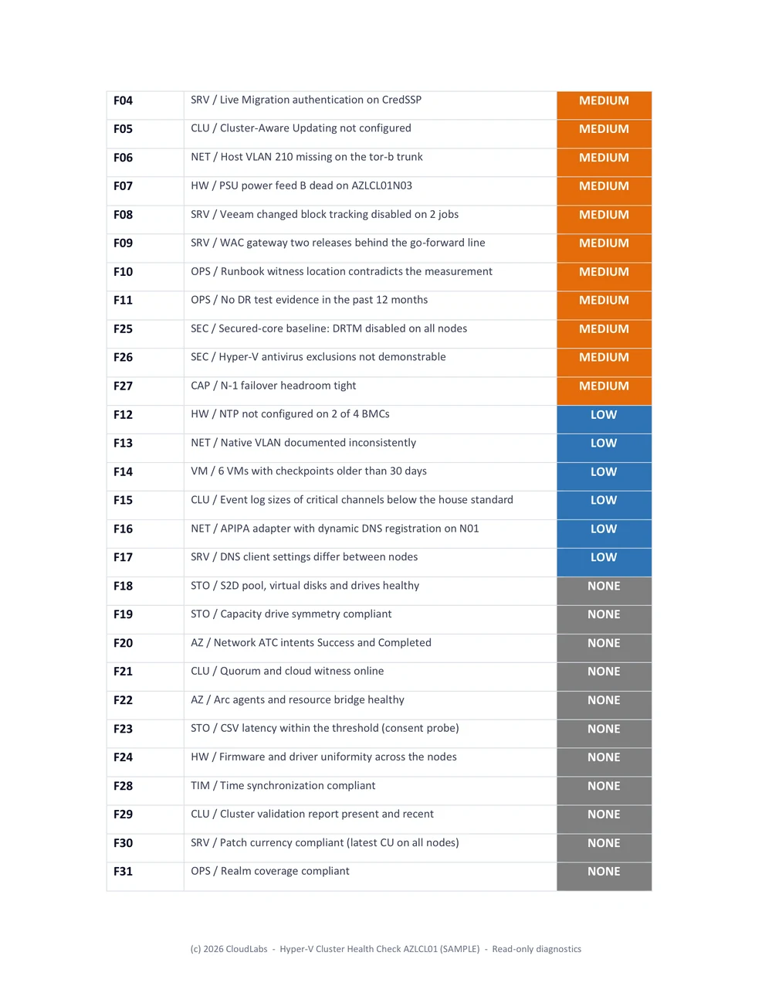
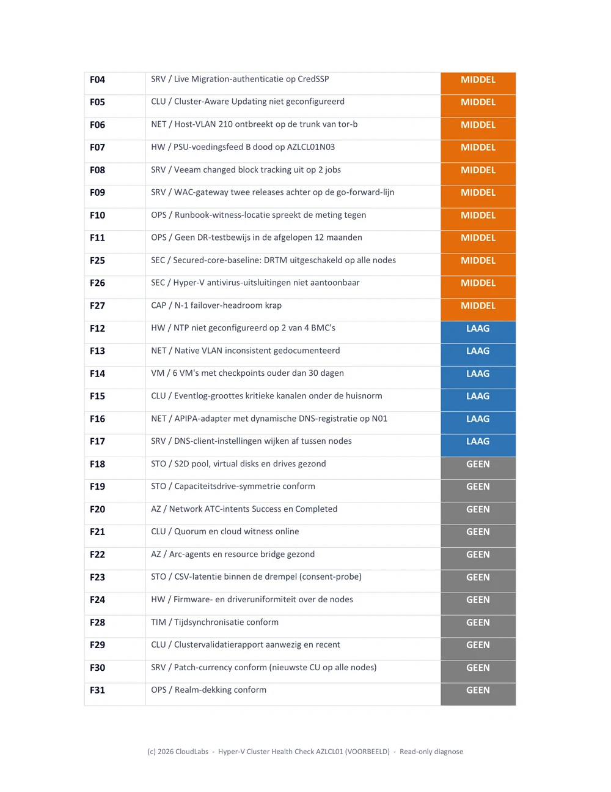
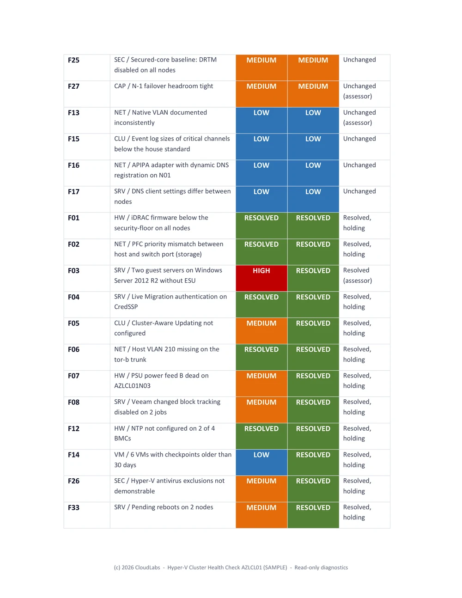
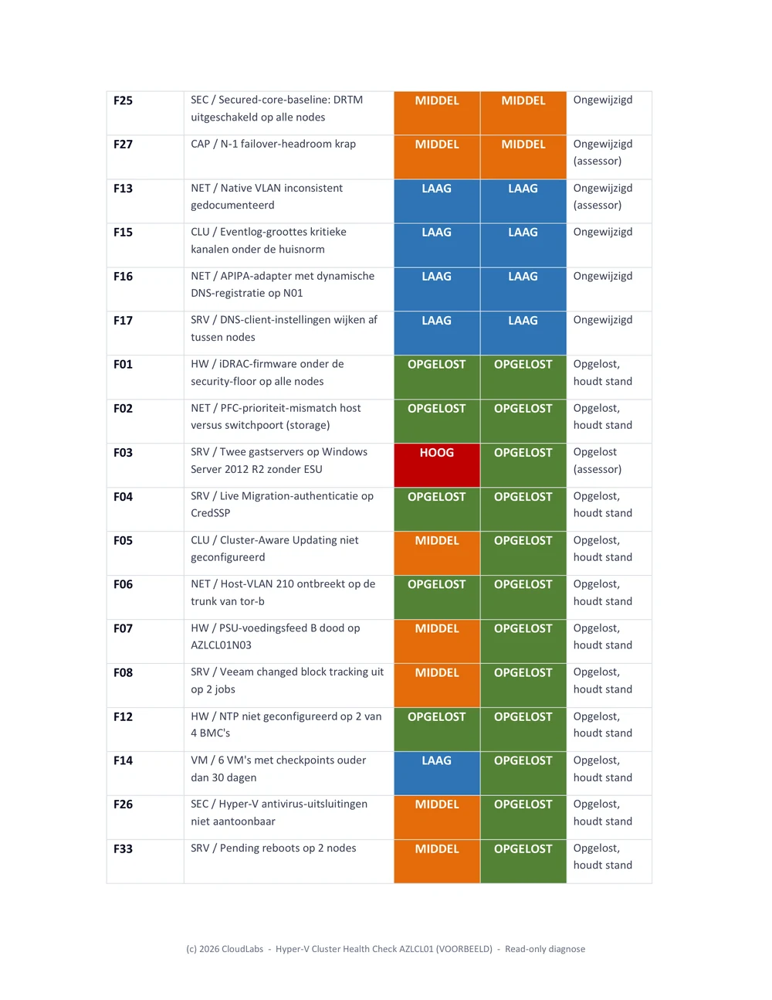
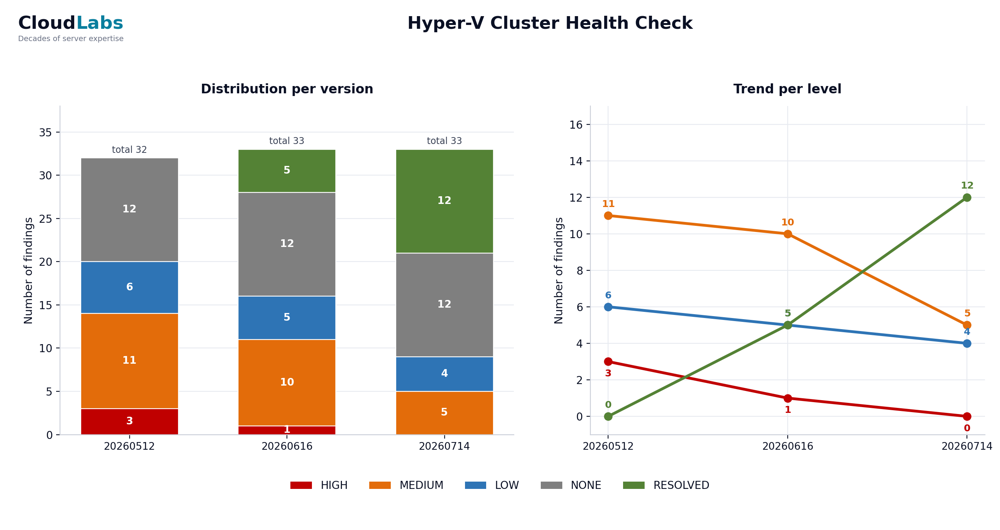
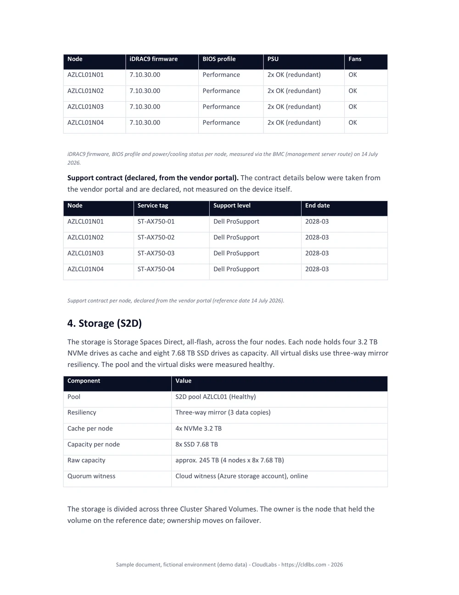
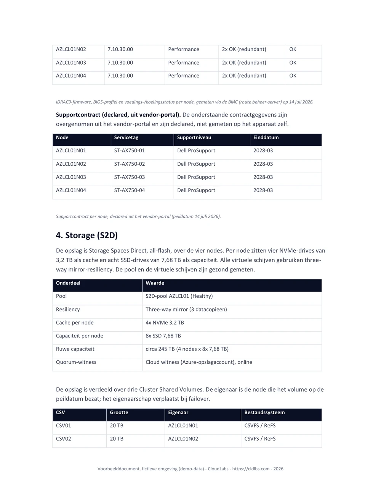
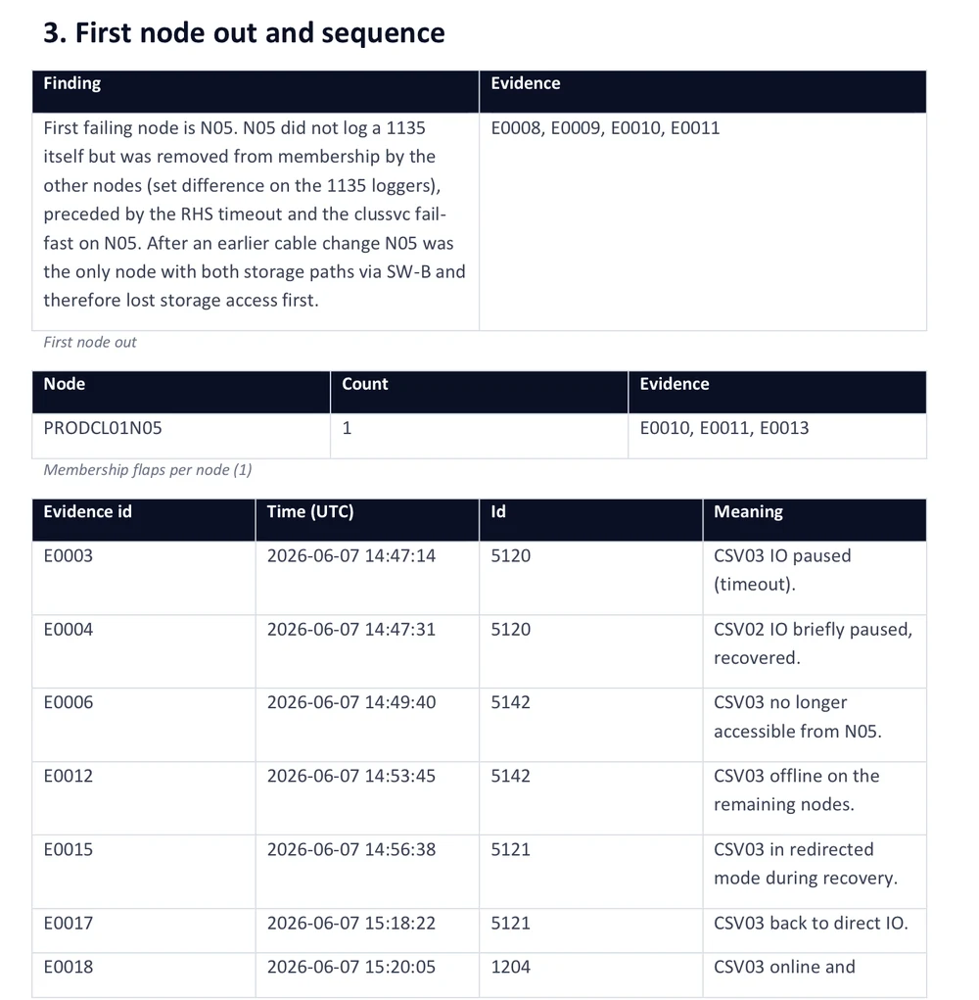
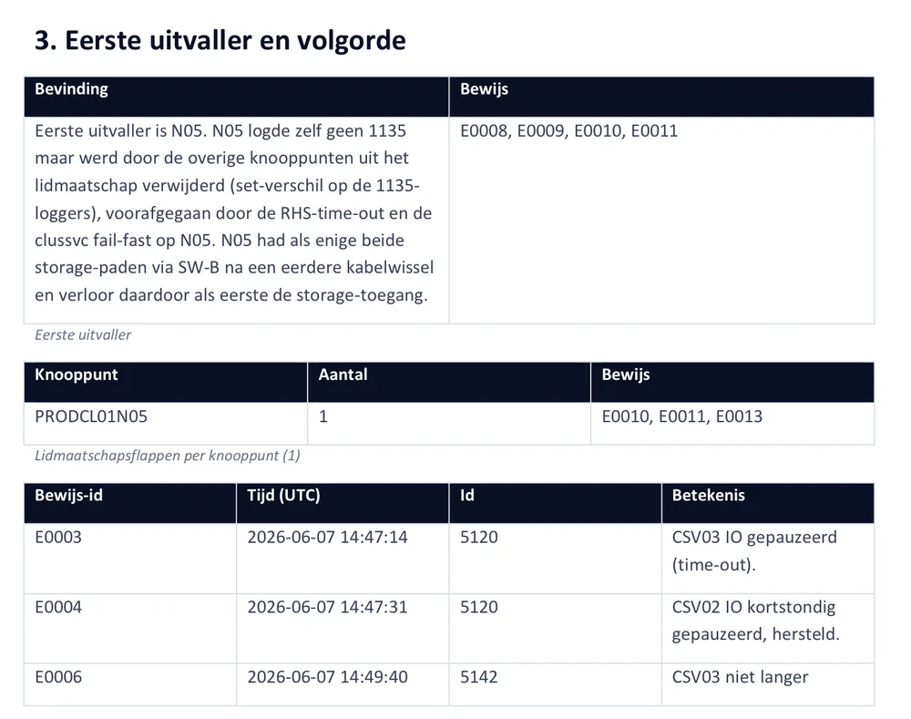

Every finding follows the same anatomy. Elke finding volgt dezelfde anatomie.
Customer-facing prose. No bullet noise. Risk visible at a glance. Below: real-world examples. Lopende prose, klantgericht. Geen bullet-ruis. Risico in één oogopslag. Hieronder voorbeelden uit de praktijk.
Methodology last updated:Methodologie bijgewerkt: July 2026
Live Migration traffic routed over the cluster heartbeat networkLive Migration-verkeer loopt over het cluster-heartbeat netwerk
StatusStatusOpen. Confirmed via Get-ClusterNetwork, per-node binding order, and the Live Migration network selection on each Hyper-V host.Open. Bevestigd via Get-ClusterNetwork, de binding order per node, en de Live Migration-netwerkselectie op elke Hyper-V host.
Current situationHuidige situatieThe Cluster Communication network has role 3 (Cluster and Client) and allows both cluster traffic and Live Migration on a single 1 GbE adapter per node. The same adapter carries cluster heartbeats and CSV metadata, and no QoS policy is applied to reserve bandwidth for either workload.Het Cluster Communication-netwerk heeft rol 3 (Cluster and Client) en staat open voor zowel cluster-verkeer als Live Migration op één 1 GbE-adapter per node. Dezelfde adapter draagt cluster-heartbeats en CSV-metadata, en er is geen QoS-beleid ingesteld om bandbreedte voor een van beide te reserveren.
Best PracticeBest PracticeLive Migration must run on a dedicated 10 GbE or faster network, physically separated from heartbeat and CSV metadata where possible. When converged on a SET team, a QoS policy must guarantee minimum bandwidth for cluster traffic, and SMB Direct (RDMA) should be enabled when the NICs support it.Live Migration hoort op een dedicated 10 GbE-netwerk of sneller, fysiek gescheiden van heartbeat en CSV-metadata waar mogelijk. Bij convergentie op een SET-team moet een QoS-beleid minimum-bandbreedte garanderen voor cluster-verkeer, en SMB Direct (RDMA) ingeschakeld zijn als de NIC's dit ondersteunen.
DeviationAfwijkingA single Live Migration of a memory-heavy VM saturates the 1 GbE link within seconds and starves cluster heartbeats. The cluster service treats missed heartbeats as node isolation, producing FailoverClustering Event ID 1135 in the System log, CSV ownership flapping, and in the worst case unplanned VM restarts on surviving nodes. Microsoft Support will require this is corrected before troubleshooting any cluster performance or stability case.Eén Live Migration van een memory-zware VM verzadigt de 1 GbE-link binnen seconden en verdringt cluster-heartbeats. De cluster-service ziet gemiste heartbeats als node-isolatie, met FailoverClustering Event ID 1135 in het Systeem-log, CSV-eigenaarschap dat heen en weer springt, en in het slechtste geval ongeplande VM-restarts op de overgebleven nodes. Microsoft Support eist correctie hiervan voor enige cluster-performance of stabiliteitscase.
RecommendationAanbevelingMove Live Migration onto a dedicated 10 GbE network, ideally with SMB Direct (RDMA) where the NICs support it. If physical separation is not feasible, apply Set-NetQosPolicy on the SET team to reserve minimum bandwidth for cluster and CSV traffic, and cap concurrent migrations via Set-VMHost -MaximumVirtualMachineMigrations.Verplaats Live Migration naar een dedicated 10 GbE-netwerk, bij voorkeur met SMB Direct (RDMA) waar de NIC's dit ondersteunen. Is fysieke scheiding niet haalbaar, gebruik dan Set-NetQosPolicy op het SET-team om minimum-bandbreedte voor cluster- en CSV-verkeer te reserveren, en begrens parallelle migraties via Set-VMHost -MaximumVirtualMachineMigrations.
ReferenceReferentieMicrosoft Learn: Hyper-V network recommendations for a failover cluster; Configure live migration settings.Microsoft Learn: Hyper-V network recommendations for a failover cluster; Configure live migration settings.
File Share Witness on a single non-redundant file serverFile Share Witness op één niet-redundante fileserver
StatusStatusOpen. Identified during the most recent cluster validation run and confirmed via Get-ClusterQuorum and Get-ClusterResource "File Share Witness".Open. Vastgesteld tijdens de meest recente cluster-validatierun en bevestigd met Get-ClusterQuorum en Get-ClusterResource "File Share Witness".
Current situationHuidige situatieThe cluster uses a File Share Witness pointed at a UNC path on a single standalone Windows file server in the same site as the cluster, on the same management VLAN. The witness server is not clustered, runs on shared infrastructure with no dedicated maintenance window, and Dynamic Witness is enabled, which masks part of the risk during day-to-day operation.Het cluster gebruikt een File Share Witness op een UNC-pad van één standalone Windows-fileserver in dezelfde site als het cluster, op hetzelfde management-VLAN. De fileserver is niet geclusterd, draait op gedeelde infrastructuur zonder eigen onderhoudsvenster, en Dynamic Witness staat aan, wat een deel van het risico in de dagelijkse operatie maskeert.
Best PracticeBest PracticeThe witness must reside on infrastructure independent of the cluster's failure domains. For single-site clusters, Cloud Witness on Azure Storage is preferred; for multisite, the witness sits in a third site or on Azure.De witness moet op infrastructuur staan los van de failure domains van het cluster. Voor single-site clusters heeft Cloud Witness op Azure Storage de voorkeur; voor multisite hoort de witness in een derde site of op Azure.
DeviationAfwijkingThe witness shares a failure domain with the cluster. Dynamic Witness offers no protection when a node fails simultaneously with the witness server; in that combined-failure case the cluster drops below quorum and all VMs go offline.De witness deelt een failure domain met het cluster. Dynamic Witness beschermt niet tegen het scenario waarin een node tegelijk uitvalt met de witness-server; in dat combinatie-scenario zakt het cluster onder quorum en gaan alle VM's offline.
RecommendationAanbevelingReconfigure to a Cloud Witness via Set-ClusterQuorum -CloudWitness using a dedicated Azure Storage Account with access keys stored separately from the cluster credentials.Configureer een Cloud Witness via Set-ClusterQuorum -CloudWitness met een dedicated Azure Storage Account waarvan de access keys los van de cluster-credentials worden bewaard.
ReferenceReferentieMicrosoft Learn: Configure and manage quorum; Deploy a Cloud Witness for a failover cluster.Microsoft Learn: Configure and manage quorum; Deploy a Cloud Witness for a failover cluster.
CSV ownership unbalanced: 7 of 8 volumes owned by a single nodeCSV-eigenaarschap onbalans: 7 van de 8 volumes op één node
StatusStatusOpen. Observed across three consecutive inventory runs via Get-ClusterSharedVolume and confirmed with Get-ClusterSharedVolumeState.Open. Geconstateerd in drie opeenvolgende inventarisatie-runs via Get-ClusterSharedVolume en bevestigd met Get-ClusterSharedVolumeState.
Current situationHuidige situatieOf the eight CSVs in the cluster, seven are owned by node HV-01. CsvBalancer is enabled with BalancingPeriod 30 minutes but has not converged, typically because VM placement keeps pulling ownership back to HV-01.Van de acht CSV's in het cluster zijn er zeven in eigendom van node HV-01. CsvBalancer staat aan met BalancingPeriod 30 minuten maar convergeert niet, doorgaans omdat VM-plaatsing het eigenaarschap blijft terugtrekken naar HV-01.
Best PracticeBest PracticeCSV ownership should be approximately even across nodes so that metadata coordination, redirected IO during backups, and Live Migration overhead are spread.CSV-eigenaarschap hoort ongeveer gelijk verdeeld te zijn, zodat metadata-coördinatie, redirected IO tijdens backups en Live Migration overhead worden gespreid.
DeviationAfwijkingConcentrated ownership creates a metadata and IO coordination hotspot on HV-01. Drain operations on HV-01 for patching trigger seven simultaneous ownership changes, elongating maintenance windows and producing brief IO pauses on VMs hosted on those CSVs.Geconcentreerd eigenaarschap creëert een hotspot voor metadata- en IO-coördinatie op HV-01. Drain-operaties op HV-01 voor patching geven zeven gelijktijdige eigenaarsovergangen, wat het onderhoudsvenster verlengt en korte IO-pauzes geeft op VM's die op die CSV's draaien.
RecommendationAanbevelingRedistribute CSV ownership manually with Move-ClusterSharedVolume so each node holds roughly the same number, then review VM placement and anti-affinity rules on HV-01.Verdeel CSV-eigenaarschap handmatig met Move-ClusterSharedVolume zodat elke node ongeveer evenveel CSV's bezit, en controleer dan de VM-plaatsing en anti-affinity regels op HV-01.
ReferenceReferentieMicrosoft Learn: Use Cluster Shared Volumes in a failover cluster; CSV cache and balancing behaviour.Microsoft Learn: Use Cluster Shared Volumes in a failover cluster; CSV cache and balancing behaviour.
Beyond the findings report Naast het findings-rapport
The findings report shown above is the baseline deliverable. From the same read-only measurements the toolchain also produces a delta report and a remaining-risk overview with a risk trend chart on every follow-up round, so progress is measured, not asserted. As-Built system documentation and a Root Cause Analysis after an incident are available as separate deliverables. See the method for how the rounds fit together. Het findings-rapport hierboven is de basisdeliverable. Uit dezelfde read-only metingen levert de toolchain bij elke vervolgronde ook een delta-rapport en een restrisico-rapport met een Risico-trend grafiek, zodat voortgang wordt gemeten en niet beweerd. As-Built systeemdocumentatie en een Root Cause Analysis na een incident zijn los te bestellen. Zie de werkwijze voor hoe de rondes samenhangen.
Real output from a sample engagement (a fictional environment, no customer data). Click any page to enlarge.Echte output uit een voorbeeldopdracht (een fictieve omgeving, geen klantdata). Klik op een pagina om te vergroten.
{kind=link}

{kind=link}

Health check with risk analysisHealth check met risicoanalyse
Findings graded HIGH, MEDIUM, LOW, with a prioritised action plan.Findings met gradaties HOOG, MIDDEL, LAAG, en een geprioriteerd actieplan.
{kind=link}

{kind=link}

Delta reportDelta-rapport
What was resolved, verified by measurement, not by ticket status.Wat is opgelost, geverifieerd door meting, niet door ticketstatus.
{kind=link}

{kind=link}
Remaining risks & trendRestrisico-rapport en trend
The open risks with a progress chart across measurements.De openstaande risico's met een Risico-trend grafiek over de metingen.
{kind=link}

{kind=link}

System documentationSysteemdocumentatie
Generated from the latest measurement, always in sync with reality.Gegenereerd uit de laatste meting, altijd actueel.
{kind=link}

{kind=link}

Root Cause AnalysisRoot Cause Analysis
After an incident: a cross-node timeline where every claim cites evidence.Na een incident: een tijdlijn over alle nodes waar elke bewering bewijs aanhaalt.